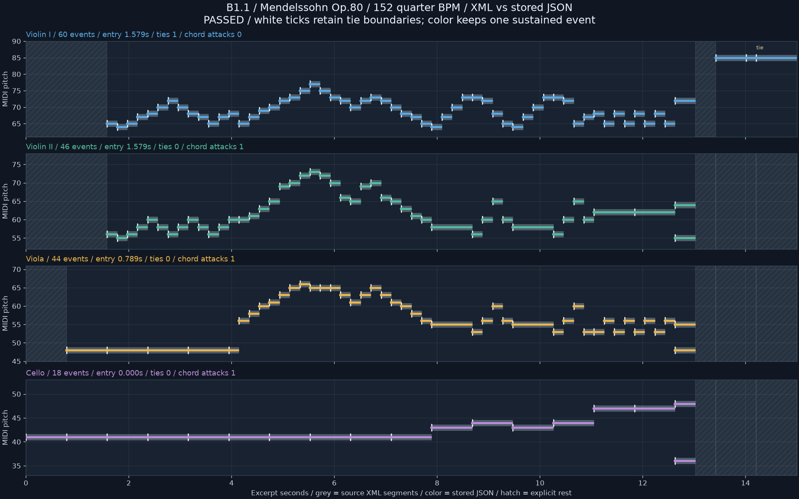
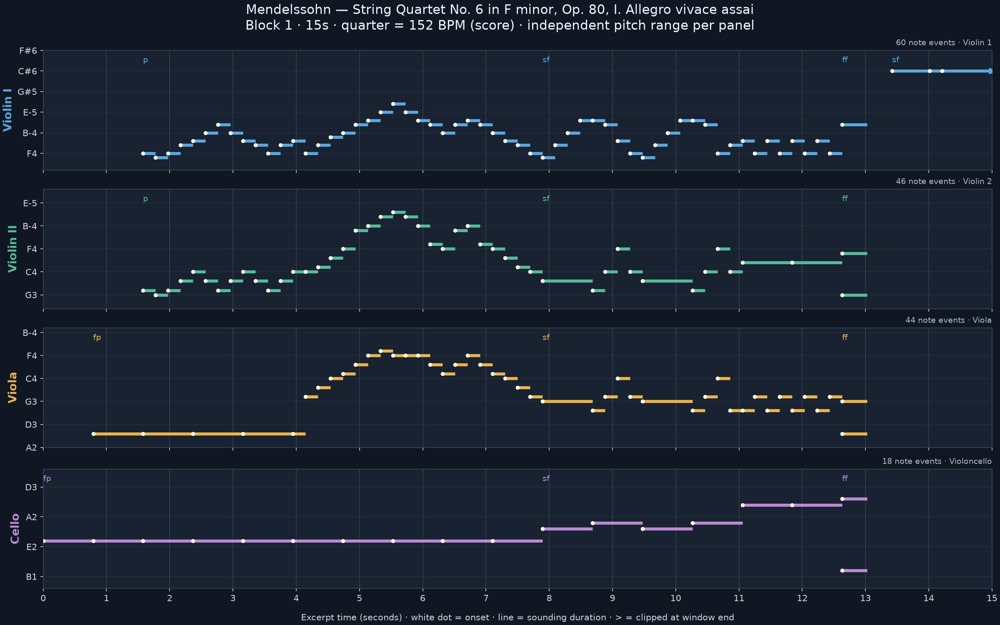

R/R RIBBON ROOM실험 기록 · 이전 결과를 보존한 검토 화면입니다. 새 그래픽 작업은 작업실에서 이어갑니다.
다른 실험 보기
B1.1 · SCORE REVIEW
멘델스존 현악 사중주 6번 · 첫 15초
원본 MusicXML과 저장된 네 파트의 음높이·진입·길이·붙임줄·중음·강약을 대조했습니다.
자동 대조: passed · 사용자 시각·청취 검토: 대기
기보 템포 ♩ = 152 기준입니다. 실제 연주의 정렬 정확도를 평가하는 화면은 아닙니다.
회색은 원본 음표 조각, 색 선은 저장된 음표입니다. 흰 눈금은 붙임줄의 원래 경계, 빗금은 명시된 쉼표 구간입니다.

강약·검토 범위
원본의 p / fp / ff 표기를 대조합니다. note별 velocity는 168개 모두 결측이며 임의 값으로 채우지 않았습니다. fp는 기보 표기로 보존하며 지속 음량으로 해석하지 않습니다.
이 검토 도구는 현재 고정 템포·단일 성부·비이조 악보만 읽습니다. MIDI, 반복 재생, 꾸밈음, 다른 판본은 검증하지 않습니다.
기존 기준 그림

대조 결과 JSON · 기존 악보 JSON 사본 · 검토 기록
출처: OpenScore String Quartets · CC0-1.0
OpenScore String Quartets; transcribed by markpearse; checked by Gijs Bikker